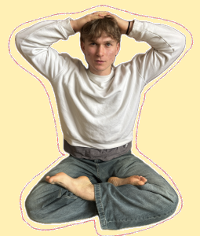

Vítejte v Polysovinách!
Vážení čtenáři,
Vítejte na stránkách našeho časopisu Polysoviny, kde studenti píšou pro studenty.
Ať už jste začali číst Polysoviny z důvodu, že vás zajímá, co se děje kolem vás, nebo proto, že se chcete přesvědčit, jak dobrou odvedla naše redakce práci, tak jste v obou případech na správném místě.
Chaos světa kolem nás se zvětšuje rychleji než cena kávy ve školních automatech, a právě proto vznikají Polysoviny. Chceme přinést témata, ve kterých si každý může najít chvíli odlehčení a pauzy od okolního světa. A zároveň přinášet informace ohledně dění ve světě i u nás na škole.
V rubrice Svět se podíváme na jeden z nejzajímavějších a pravděpodobně jeden z nejkontroverznějších konfliktů poslední doby. Rubrika Věda zase ukáže, jak bude nejspíše vypadat budoucnost energetiky. Psychologie ukáže experiment, který dokazuje fakt, který dost možná každý v životě zažil, ale nikdy se nad ním nepozastavil. Pro ty, kteří odlehčení hledají spíše ve věcech, které mají kolem sebe, je tu rubrika Bulvár, která srovná dvě největší školní akce poslední doby zajímavým způsobem. Kultura popíše pocity a atmosféru minulého maturitního plesu a dodá dva zajímavé rozhovory. Sport nabídne exkluzivní rozhovor s naším profesorem tělocviku Robertem Pečonkou, který je bývalým brankářem.
Polysoviny jsou hlavně společným projektem studentů, kteří věří, že kvalita vždy porazí kvantitu. Každý článek vznikl díky něčí zvědavosti, zájmu a chuti něco sdílet. Doufáme, že v našem prvním vydání najdete něco, co vás pobaví, zaujme či přiměje se na chvíli zamyslet.
Přejeme příjemné čtení.
REDAKCE POLYSOVIN

ZDROJE